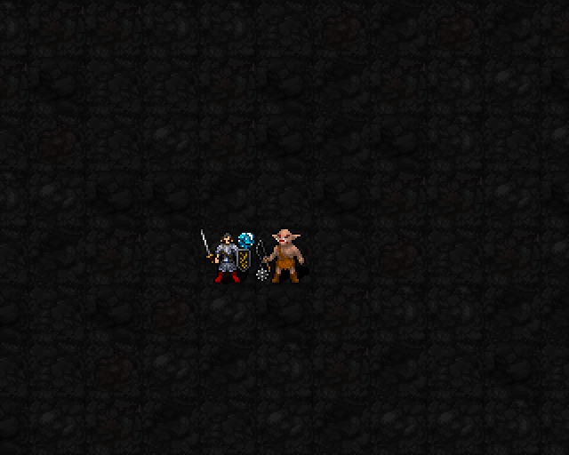

공격으로 피해를 준 일반 바닥을 돌죽 기본 얕은 물로 바꿉니다.
신앙30 해금 · 최소 기도술 제한 없음 · 자동 패시브 · MP/신앙 소모 없음

실제 엔진 캡처: 공격 전 → 적중·물 생성 → 적이 떠난 물 → 플레이어가 물에 선 모습 → 물 소멸. 장면 사이 이동은 검증용 배치이며, 이동 애니메이션이 아닙니다.
| 항목 | 현재 적용 |
|---|---|
| 생성 | 피해가 있는 직접 공격. 일반 바닥 또는 스우의 기존 물 위에서 생성·갱신. 자연 물과 다른 임시 지형은 변경하지 않음 |
| 지속 | 생성부터5+0.1I턴. I12에서6.2턴, 공격 처리 시간 포함 |
| 최대 수 | 1성 웅덩이12개. 초과 시 가장 오래된 웅덩이 복구 |
| 적 | 기본 얕은 물 판정. 물에 서툰 몹은 이동 비용+6, 근접공격25% 헛손질. 수영·비행·큰 체격 등은 기본 예외 적용 |
| 플레이어 | 기본 얕은 물 판정. 스우 신도는 얕은 물 이동 지연·근접 헛손질 면제. 자연 얕은 물에도 적용, 신앙 최소치 없음. 깊은 물·액화 지형은 기존 규칙 유지. 배교 즉시 면역 해제 |
| 별도 이동 감속 | 기존 ×1.25 추가 비용 제거. 기본 물 효과와 중첩하지 않음 |
| 추가 피해 | 1성 물 자체 피해 없음 |
| 3성·5성 | 3성은 실제 물을 지날 때 폭 확장. 5성 영역도 실제 얕은 물로 변경되며 이동 시 영역 밖의 5성 물은 복구. 자연 물은 유지 |
| 복원·저장 | 기본 임시 지형 시스템으로 만료·저장·불러오기 처리. 겹친1·5성 물은 각 지속시간 보존 |
I는 기도술. 일반 지형 타일을 사용하며 기존 물결 바닥 오버레이는 제거했습니다. 22신 회귀 검증, 스우 물 생성·적 헛손질·신도 면역·자연 물 면역·배교 해제·깊은 물 기존 판정·만료·5성 이동·별도 프로세스 저장 복원 통과.
스우1성 검토 중. 이번 변경이 승률 향상을 보장하지는 않으며, 실플레이 밸런스 평가는 별도입니다.